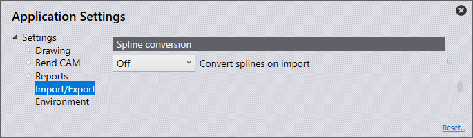

インポート/エクスポート
このセクションは、Import settingsの設定についてです。

ホームページのSettings アイコンをクリックします。
アイコンをクリックします。

Import settings
このセクションは、Import settingsの設定についてです。 Settings アイコンをクリックします。Import/Exportをクリックして、Import settingsに移動します。

Units for DXF files ・ここでミリメートルまたはインチのいずれかに設定します。
Stitch together lines/arcs closer than this -この値（ 0 > 1 mm ）を設定します。指定値よりも近接した線/円弧のあるパーツをインポートする際、ソフトウェアは自動的にそれらを結合します。
Maximum thickness for sheet-metal part - 大きな材料の認識には、材料認識の閾値を増やして下さい。（ 10 > 40 mm ）これは、使用する単位に応じて、初期設定で25mmまたは1インチに自動設定されます。
Point entities - 選択したオプションに応じて、点のインポート方法が決まります。
Import all -すべての点がインポートされ、表示されます。
Skip points on polylines - ポリラインで検出されたすべての点をスキップします。
Skip all - これはインポート時にすべての点をスキップし、一つもは表示されません。
Ignore layers in DXF/DWG files - 通常、DXF および DWG 図面は異なるレイヤー上に作成されます。この設定では、ソフトウェアは全てレイヤーを無視し、すべてのオブジェクトを初期設定のレイヤーに移動します。
Explode blocks in 2D drawing - インポート中にグループを分割します
Convert white entities to black -この設定をオンにして、インポート中に白いオブジェクトを黒いオブジェクトに変換します。
Darken colors during DXF import- この設定をオンにすると、インポート中に色付きオブジェクトが暗くなります。
Remove duplicate segments -この設定をオンにして、インポート時にパーツで見つかった重複したジオメトリを削除します。
DXF settings
このセクションは、DXF settingsの設定についてです。次の Settings アイコンをクリックします。Import/Exportをクリックして、DXF settingsに移動します。

Angles in DXF are interior angles -この設定を有効化し、DXFの角度を開口角度として処理します。
Export settings
このセクションは、Export settingsの設定についてです。Settings アイコンをクリックします。Import/Exportをクリックして、Export settingsに移動します。

No POLYLINE objects in DXF output - 通常、閉じたコンターは DXF をエクスポートする際、ポリラインとして表示されます。一部のCADシステムは、この表示を処理出来ません。この設定では、ソフトウェアは線と円弧のある DXF を表示します。これらのファイルはどこでも読み取り可能ですが、作成されるファイルのサイズは大きく、線と円弧の接続は失われます。
Output bend-info when saving DXF files - この設定をオンにすると、エクスポートされた DXF に曲げ情報が表示されます。
Bend-info in Starmatik format - このスイッチをオンにすると、曲げ情報をStarmatik形式で表示します。ここで、曲げ線となる各線のきっちり中央にテキスト エンティティが配置されます。
Convert black to gray on output - 2 Dデータをエクスポートする際、DXFファイルのオブジェクトは初期設定で黒に表示されます。CADプログラムでオブジェクトを認識しやすくするために、この設定ではオブジェクトがグレーで表示されます。
Start MetaCAM when PDG files are exported -この設定をオンにすると、PDGファイルがMetaCAMで開くように自動的に設定されます。
Format for flat pattern - フラットパターンをエクスポートする際に、ファイル形式をGEO、DXF、またはPDGに設定できます。
Spline conversion
このセクションは、 Spline conversion の設定についてです。Settings アイコンをクリックします。この Spline conversionをクリックして、Import/Export設定に移動します。

Convert splines on import -ここで、スプライン変換をオフにするか、スプラインを線または円弧に変換するか規定します。いずれにせよ、各スプラインは線または円弧セグメントのある単一のポリライン オブジェクトに変換されます。
Node-count computation -生成される線または円弧の数は、2 つのメカニズムのいずれかで計算されます：ピッチまたは偏向 。
Length of each line or arc segment - ノード数の計算でピッチを選択した場合は、このステップ長さを使って、スプライン分割のために各円弧または線の長さを規定します。
Maximum deviation during approximation - ノード数の計算に偏向を選択した場合は、ここで元の滑らかなスプラインと線/円弧近似との間で許容される最大偏向を設定します。ポリラインは、最大誤差をこのリミットに抑えながら、出来る限り少ないセグメントで構成されます。
Assembly Explode
このセクションでは、Assembly Explode設定の構成について説明します。Settings アイコンをクリックします。この Import/Exportをクリックして、Assembly Explode設定に移動します。

Skip sheet-metal parts with no bends - コンポーネントを分解する際、このスイッチをオンにすると、曲げ線のある材料パーツのみが表示されます。オフにすると、コンポーネントのすべてのパーツが表示されます。
Components (nuts/bolts etc) to display -この設定を使用して、他のコンポーネントのあるコンポーネントを分解する際に表示するオプションを選択します。
None -分解後は材料のみが表示され、その他のナット/ボルトは表示されません。
Unidentified -ソフトウェアでまだ識別されていないコンポーネントのみが表示されます。
All -すべてのコンポーネントが表示されます。
Layer mapping

このセクションでは、Layer mappingの構成について説明します。次の Settings アイコンをクリックします。Import/Exportをクリックして、Layer mapping設定に移動します。
このセクションでは、ソフトウェアにインポートされるパーツで使用するレイヤーを、その機能（用途）に自動的に割り当てられます。
もしインポートしたパーツに「MARK」レイヤーがある場合、ソフトウェアで自動的に「Markレイヤー」を使用するよう設定できます。
Layer name -これはレイヤーの名前です。そのレイヤーのあるパーツをインポートすると、「使用」パネルで設定された機能が適用されます。
Use -これはレイヤーの機能です。以下が、利用可能なさまざまなオプションです：
Standard -これは、CAMに使用する規格のレイヤーです。
Auxiliary - 補助レイヤーで、CAMでは使用しません。
Mark -このレイヤーのすべてのエンティティは、マーキングされます。切断されません。
Approach marker -レーザのアプローチ位置を示す点エンティティ。
Sequence marker -コンターの順序を示すテキストマーカー。
Forming center - 成形用の中心マーク（点または小さなL字型）
Forming foot print -成形のアウトライン（フットプリント）。
Evaporate -このレイヤーはフィルム焼きつきとを区別するために使用されます。
Dot marking -このレイヤーはQRコードに使用されます。
Info -これは情報のみのレイヤーです。